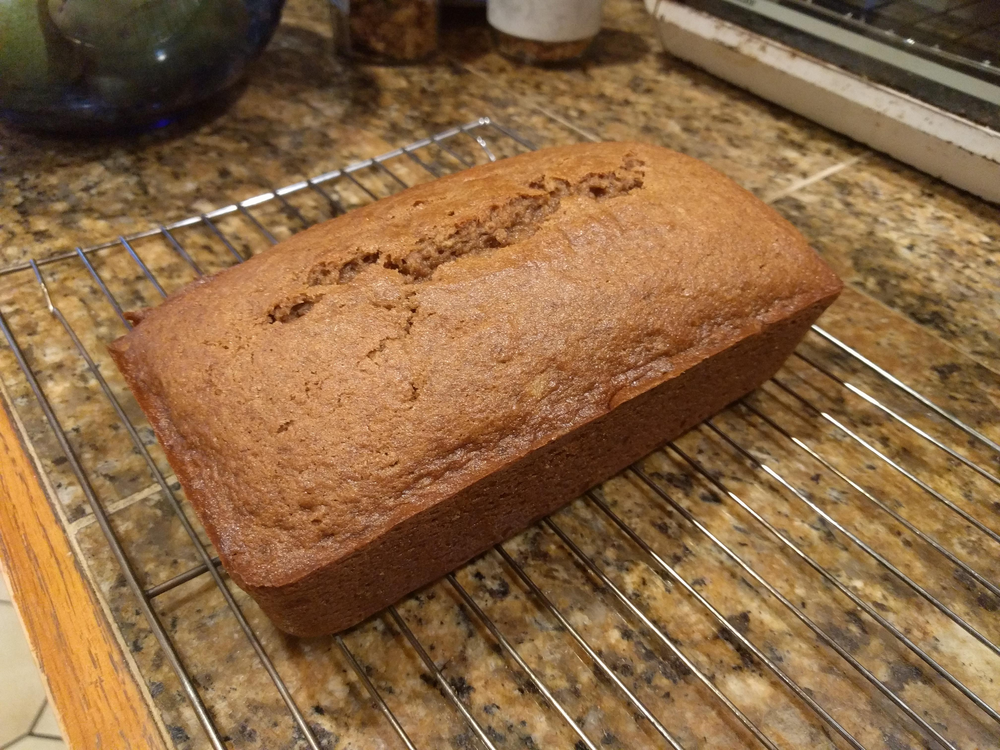

Return to recipe index
Rich's Famous Banana Bread

Description
I have been making this recipe for many years. You can scale it
up (or down) as needed. I often make 3 loaves at a
time. Sometimes 4, but that's pushing the capacity of my Kitchen
Aid stand mixer.
On several occasions in the early 2000s I scaled this up to make
9 loaves at a time, then did that repeatedly, to bring mass
quantities to Burning Man. Hence its nickname, "The Moistest
Thing on the Playa". At the peak (2001?) I made more than 50
loaves one year. You kind of need to work hard to give away that
much banana bread. Thank goodness for
bianca's, and
remember that bianca loves you
Don't go overboard on the bananas, or you can end up with a
section in the center which is undercooked.
Ingredients
- 1 stick butter (room temperature), plus more for greasing pan(s)
- ⅔ cup brown sugar
- 8 bananas (very ripe)
- 2 eggs
- ⅔ cup white sugar
- 2 tsp. vanilla
- 1½ cups white flour
- 1½ cups whole wheat flour
- 2 tsp. salt
- 2 tsp. baking soda
- 2 tsp. cinnamon
- 1 tsp. nutmeg
Steps
- Preheat the oven to 350°F.
- Cream the butter in a mixer at high speed. Add the brown sugar and continue to beat until light and fluffy. Add the bananas one at a time with the mixer on medium. Add the eggs, white sugar, and vanilla, and mix until well blended.
- In another bowl, whisk together the white and whole wheat flours, salt, baking soda, cinnamon, and nutmeg. With the mixer on medium-low, add the dry ingredients gradually, until no dry spots remain.
- Liberally grease either two loaf pans, or one 9×13 baking dish, with butter. Spread the batter into the pans, being sure to get it in all of the edges and corners.
- Bake for approximately 1 hour (check earlier), until a toothpick comes out clean.